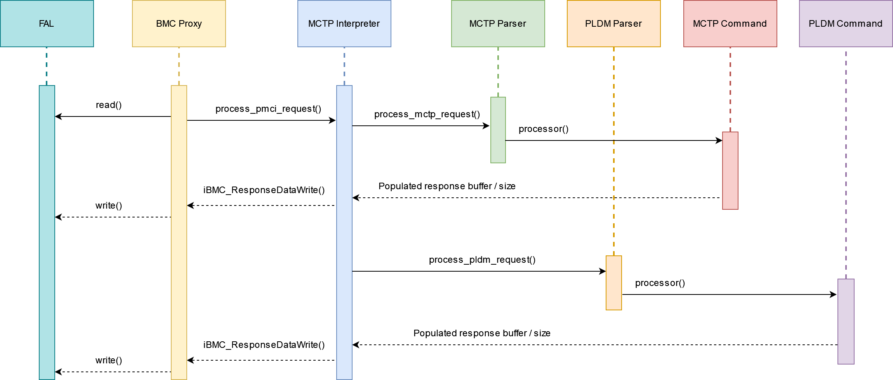
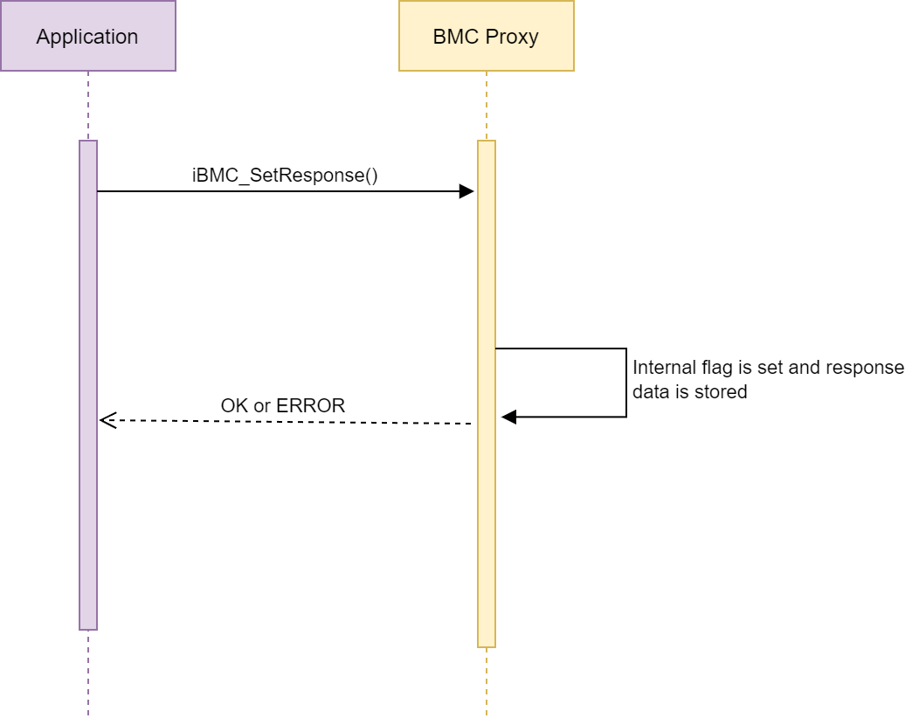

Board Management Controller (BMC) Proxy Driver¶
Overview¶
MCTP - Management Component Transport Protocol
PLDM - Platform Level Data Model
The BMC proxy allows for communication and sensor management between the BMC and AMC through MCTP/PLDM protocols. The BMC proxy is polling indefinitely and listening for incoming messages through a FAL read call. If a message is received, an internal flag is set that will start the processing of the message. The proxy calls into the MCTP code to determine whether the message is an MCTP, PLDM Type 0 or PLDM Type 2 form which will determine the exact command. The PLDM code will then form a response to the initial request, which gets sent back to the BMC via a firmware interface write by the BMC proxy driver.
Note:¶
The MCTP/PLDM code provided is intended to be used and an example to prove the basic functionality of a BMC stack. AMC only supports Type 0 and Type 2 DMTF messages (limited to sensor reading - i.e. no effecters).

Supported commands¶
M - Mandatory
O - Optional
C - Conditional
MCTP¶
| Command Name | Command Code | DMTF Spec M/O/C |
|---|---|---|
| Set Endpoint ID | 0x01 | M |
| Get Endpoint ID | 0x02 | M |
| Get Endpoint UUID | 0x03 | M |
| Get MCTP Version Support | 0x04 | M |
| Get Message Type support | 0x05 | M |
PLDM Type 0¶
| Command Name | Command Code | DMTF Spec M/O/C |
|---|---|---|
| SetTID | 0x01 | M |
| GetTID | 0x02 | M |
| GetPLDMVersion | 0x03 | M |
| GetPLDMTypes | 0x04 | M |
| GetPLDMCommands | 0x05 | M |
PLDM Type 2¶
| Command Name | Command Code | DMTF Spec M/O/C |
|---|---|---|
| SetTID | 0x01 | M |
| GetTID | 0x02 | M |
| SetNumericSensorEnable | 0x10 | M |
| GetSensorReading | 0x11 | M |
| GetPDRRepositoryInfo | 0x50 | M |
| GetPDR | 0x51 | M |
Supported PDRs¶
| PDR Type Number | PDR Type Name |
|---|---|
| 1 | Terminus Locator PDR |
| 2 | Numeric Sensor PDR |
| 6 | Sensor Auxiliary Names PDR |
Internal APIs¶
Enums¶
BMC accepted events.
BMC_PROXY_DRIVER_EVENTS
/**
* @enum BMC_PROXY_DRIVER_EVENTS
* @brief Events raised by this proxy driver
*/
typedef enum BMC_PROXY_DRIVER_EVENTS
{
BMC_PROXY_DRIVER_E_MSG_ARRIVAL = 0,
BMC_PROXY_DRIVER_E_GET_PDR,
BMC_PROXY_DRIVER_E_GET_PDR_REPOSITORY_INFO,
BMC_PROXY_DRIVER_E_GET_SENSOR_INFO,
BMC_PROXY_DRIVER_E_ENABLE_SENSOR,
BMC_PROXY_DRIVER_E_INVALID_REQUEST_RECVD,
MAX_BMC_PROXY_DRIVER_EVENTS
} BMC_PROXY_DRIVER_EVENTS;
Response result IDs.
BMC_PROXY_RESULT
/**
* @enum BMC_PROXY_RESPONSE_RESULT
* @brief The response result
*/
typedef enum BMC_PROXY_RESULT
{
BMC_PROXY_RESULT_SUCCESS = 0,
BMC_PROXY_RESULT_FAILURE,
MAX_BMC_PROXY_RESULT
} BMC_PROXY_RESULT;
Response IDs.
BMC_SENSOR_RESPONSE
/**
* @enum BMC_SENSOR_RESPONSE
* @brief The response
*/
typedef enum BMC_SENSOR_RESPONSE
{
BMC_RESPONSE_OK = 0,
BMC_RESPONSE_ERROR,
MAX_BMC_SENSOR_RESPONSE
} BMC_SENSOR_RESPONSE;
Enable sensor response IDs.
BMC_SET_NUMERIC_SENSOR_ENABLE_RESPONSE
/**
* @enum BMC_SET_NUMERIC_SENSOR_ENABLE_RESPONSE
* @brief The response
*/
typedef enum BMC_SET_NUMERIC_SENSOR_ENABLE_RESPONSE
{
BMC_SENSOR_ENABLE_RESP_OK = 0,
BMC_SENSOR_ENABLE_RESP_INVALID_SENSOR_ID,
BMC_SENSOR_ENABLE_RESP_INVALID_SENSOR_OPERATIONAL_STATE,
BMC_SENSOR_ENABLE_RESP_EVENT_GENERATION_NOT_SUPPORTED,
BMC_SENSOR_ENABLE_RESP_NONE,
MAX_BMC_SENSOR_ENABLE_RESP
} BMC_SET_NUMERIC_SENSOR_ENABLE_RESPONSE;
Get sensor response IDs.
BMC_GET_SENSOR_RESPONSE
/**
* @enum BMC_GET_SENSOR_RESPONSE
* @brief The response
*/
typedef enum BMC_GET_SENSOR_RESPONSE
{
BMC_GET_SENSOR_RESP_OK = 0,
BMC_GET_SENSOR_RESP_INVALID_SENSOR_ID,
BMC_GET_SENSOR_RESP_INVALID_SENSOR_OPERATIONAL_STATE,
BMC_GET_SENSOR_RESP_REARM_UNAVAILABLE_IN_PRESENT_STATE,
BMC_GET_SENSOR_RESP_NONE,
MAX_BMC_GET_SENSOR_RESP
} BMC_GET_SENSOR_RESPONSE;
Initialize the proxy¶
The initialize function takes in 15 parameters:
The unique ID of the proxy driver
Pointer to the firmware interface the proxy uses
The port of the firmware interface
The priority of the task
Pointer to the list of temperature sensor PDRs
Pointer to the list of voltage sensor PDRs
Pointer to the list of current sensor PDRs
Pointer to the list of power sensor PDRs
Pointer to the list of names sensor PDRs
Total number of PDRs in the respective lists
iBMC_Initialise
/**
* @brief Main initialisation point for the BMC Proxy Driver
*
* @param ucProxyId Unique ID for this Proxy driver
* @param pxFwIf Handle to the Firmware Interface to use
* @param ulFwIfPort Port to use on the Firmware Interface
* @param ulTaskPrio Priority of the Proxy driver task (if RR disabled)
* @param ulTaskStack Stack size of the Proxy driver task
* @param pxPdrTemperatureSensors Pointer to Temperature PDR
* @param iTotalPdrTemperature Size of Temperature PDR
* @param pxPdrVoltageSensors Pointer to Voltage PDR
* @param iTotalPdrVoltage Size of Voltage PDR
* @param pxPdrCurrentSensors Pointer to Current PDR
* @param iTotalPdrCurrent Size of Current PDR
* @param pxPdrPowerSensors Pointer to Power PDR
* @param iTotalPdrPower Size of Power PDR
* @param pxPdrSensorNames Pointer to Sensor Names PDR
* @param iTotalPdrName Size of Sensor Names PDR
* @param pucUuid Pointer to UUID
*
* @return OK Proxy driver initialised correctly
* ERROR Proxy driver not initialised, or was already initialised
*
* @note Proxy drivers can have 0 or more firmware interfaces
*/
int iBMC_Initialise( uint8_t ucProxyId,
FW_IF_CFG *pxFwIf,
uint32_t ulFwIfPort,
uint32_t ulTaskPrio,
uint32_t ulTaskStack,
PLDM_NUMERIC_SENSOR_PDR *pxPdrTemperatureSensors,
int iTotalPdrTemperature,
PLDM_NUMERIC_SENSOR_PDR *pxPdrVoltageSensors,
int iTotalPdrVoltage,
PLDM_NUMERIC_SENSOR_PDR *pxPdrCurrentSensors,
int iTotalPdrCurrent,
PLDM_NUMERIC_SENSOR_PDR *pxPdrPowerSensors,
int iTotalPdrPower,
PLDM_NUMERIC_SENSOR_NAME_PDR *pxPdrSensorNames,
int iTotalPdrName,
uint8_t *pucUuid );
Bind callback¶
Applications can bind into the callback to listen to incoming events and handle them accordingly.
Current list of supported events:
BMC_PROXY_DRIVER_E_SMBUS_MSG_ARRIVAL
BMC_PROXY_DRIVER_E_GET_PDR
BMC_PROXY_DRIVER_E_GET_PDR_REPOSITORY_INFO
BMC_PROXY_DRIVER_E_GET_SENSOR_INFO
BMC_PROXY_DRIVER_E_ENABLE_SENSOR
BMC_PROXY_DRIVER_E_INVALID_REQUEST_RECVD
iBMC_BindCallback
/**
* @brief Bind into this proxy driver
*
* @param pxCallback Callback to bind into the proxy driver
*
* @return OK Callback successfully bound
* ERROR Callback not bound
*/
int iBMC_BindCallback( EVL_CALLBACK *pxCallback );
Set sensor info response¶
Function used to respond to the BMC_PROXY_DRIVER_E_GET_SENSOR_INFO event.
iBMC_SendResponseForGetSensor
/**
* @brief Response to a Sensor Info request
*
* @param pxSignal Current event occurence (used for tracking)
* @param usSensorId Sensor Id
* @param ssSensorInfo Sensor Value
* @param ucSensorState Sensor Operational State
* @param xSensorResponse The response to the sensor query, OK, Invalid ID etc
*
* @return OK Command was successful
* ERROR Command failed
*/
int iBMC_SendResponseForGetSensor( EVL_SIGNAL *pxSignal,
uint16_t usSensorId,
int16_t ssSensorInfo,
uint8_t ucSensorState,
BMC_GET_SENSOR_RESPONSE xSensorResponse );
Set response¶
Responds back to a request from the proxy to enable a sensor.
iBMC_SetResponse
/**
* @brief Response to an enable sensor request
*
* @param pxSignal Current event occurence (used for tracking)
* @param xBmcResponse Enable sensor response
*
* @return OK Command was successful
* ERROR Command failed
*/
int iBMC_SetResponse( EVL_SIGNAL *pxSignal, uint16_t usSensorId, BMC_SENSOR_RESPONSE xBmcResponse );
Get UUID¶
Returns the board UUID
iBMC_GetUuid
/**
* @brief Get the UUID
*
* @param pucUuid pointer to UUID location
*
* @return OK or ERROR
*/
int iBMC_GetUuid( uint8_t * pucUuid );
Get sensor ID request¶
If a BMC_PROXY_DRIVER_E_GET_SENSOR_INFO event is received, the application can call iBMC_GetSensorIdRequest to get more information about the request like the sensor ID and operational state.
iBMC_GetSensorIdRequest
/**
* @brief Function called after certain events are raised to get the sensor id
*
* @param pxSignal pointer to signal raised
* @param pusSensorId pointer sensor id
* @param pucOperationalState pointer to the new state (if required)
*
* @return OK or ERROR
*/
int iBMC_GetSensorIdRequest( EVL_SIGNAL *pxSignal, int16_t *pssSensorId, uint8_t *pucOperationalState );
Data write¶
Performs a FAL write with the supplied buffer and size.
iBMC_ResponseDataWrite
/**
* @brief Start a Data Write
*
* @param pucData Pointer to the data
* @param usDatasize Size of data received
*
* @return OK or ERROR
*/
int iBMC_ResponseDataWrite( uint8_t *pucData, uint16_t usDataSize );
Print statistics¶
Prints the statistics associated with the proxy.
iBMC_PrintStatistics
/**
* @brief Print all the stats gathered by the application
*
* @return OK Stats retrieved from proxy driver successfully
* ERROR Stats not retrieved successfully
*
*/
int iBMC_PrintStatistics( void );
Clear statistics¶
Clears the statistics associated with the proxy.
iBMC_ClearStatistics
/**
* @brief Clear all the stats in the application
*
* @return OK Stats cleared successfully
* ERROR Stats not cleared successfully
*
*/
int iBMC_ClearStatistics( void );
Get proxy state¶
Gets the current health state of the proxy.
iBMC_GetState
/**
* @brief Gets the current state of the proxy driver
*
* @param pxState Pointer to the state
*
* @return OK If successful
* ERROR If not successful
*/
int iBMC_GetState( MODULE_STATE *pxState );
BMC Proxy Handling Requests¶
The request API’s allows an application to get a copy of the internal proxy request data received via the FAL.
iBMC_GetSensorIdRequest
The requests data is stored within the BMC proxy when the event is generated and the callback has been invoked to notify any registered users.
When the request from the application is made a protected copy of the data is made and returned that will allow the user to perform the relevant action.
A global mutex is held until a MCTP message is processed and response created. Any BMC request calls that change private data are within the flow of that message making them protected.

BMC Proxy Handling Responses¶
The response API’s are used by the application to respond back to the request with data/result code once the relevant action has been performed.
iBMC_SetResponse
iBMC_GetSensorInfoResponse
Within each response a the relevant flag is set, signaling to the proxy that the event has been handled and the requested data is available.
A global mutex is held until a MCTP message is processed and response created. Any BMC response calls that change private data are within the flow of that message making them protected.

Examples¶
Initialize Proxy¶
The initialize function needs a unique id for the proxy, a handle to a FW_IF (already created and initialized), and a task priority/size passed in, as well as the PDR sensor lists and total values.
iBMC_Initialise Example
if( OK == iBMC_Initialise( AMC_EVENT_UNIQUE_ID_BMC, &xSMBusIf, 0, AMC_TASK_PRIO_DEFAULT, AMC_TASK_DEFAULT_STACK,
pxPdrTemperatureSensors, TOTAL_PDR_TEMPERATURE,
pxPdrVoltageSensors, TOTAL_PDR_VOLTAGE,
pxPdrCurrentSensors, TOTAL_PDR_CURRENT,
pxPdrPowerSensors, TOTAL_PDR_POWER,
pxPdrSensorNames, TOTAL_PDR_NUMERIC_ASCI_SENSORS ) )
Register for Callback¶
Define a function based on the function pointer prototype and bind in using the API.
iBMC_Initialise Example
/**
* @brief BMC Proxy Driver EVL callback
*/
static int iBmcCallback( EVL_SIGNAL *pxSignal )
{
int iStatus = ERROR;
if( ( NULL != pxSignal ) && ( AMC_EVENT_UNIQUE_ID_BMC == pxSignal->ucModule ) )
{
switch( pxSignal->ucEventType )
{
default:
{
break;
}
}
}
return iStatus;
}
Generating Responses¶
Example of calling the response (iBMC_GetSensorInfoResponse) from within the callback to send the result back to the proxy.
BMC_PRIVATE_DATA
/**
* @brief RMI Handler EVL callback
*/
static int iBmcProxyCallback( EVL_SIGNAL *pxSignal )
{
int iStatus = ERROR;
if( ( NULL != pxSignal ) && ( AMC_EVENT_UNIQUE_ID_BMC == pxSignal->ucModule ) )
{
if( MAX_BMC_PROXY_DRIVER_EVENTS >= pxSignal->ucEventType )
{
switch( pxSignal->ucEventType )
{
case BMC_PROXY_DRIVER_E_GET_PDR:
{
INC_STAT_COUNTER( OUT_OF_BAND_STATS_BMC_PDR_REQUEST )
break;
}
case BMC_PROXY_DRIVER_E_GET_PDR_REPOSITORY_INFO:
{
INC_STAT_COUNTER( OUT_OF_BAND_STATS_BMC_PDR_INFO_REQUEST )
break;
}
case BMC_PROXY_DRIVER_E_GET_SENSOR_INFO:
{
INC_STAT_COUNTER( OUT_OF_BAND_STATS_BMC_SENSOR_INFO_REQUEST )
/* TODO: Get info on requested sensor */
/* TODO: Set the result code based on the collection */
iBMC_GetSensorInfoResponse( pxSignal,
sSensorId,
sSensorDataResponse,
ucSensorOperationalState,
xSensorResponse );
break;
}
default:
{
INC_STAT_COUNTER( OUT_OF_BAND_STATS_BMC_UNSUPPORTED_REQUEST )
break;
}
}
iStatus = OK;
}
}
return iStatus;
}
Handling Requests¶
Example of requesting the data associated with an event (iBMC_GetSensorIdRequest) from within the callback and to send the result back to the proxy.
BMC_PRIVATE_DATA
/**
* @brief RMI Handler EVL callback
*/
static int iBmcProxyCallback( EVL_SIGNAL *pxSignal )
{
int iStatus = ERROR;
if( ( NULL != pxSignal ) && ( AMC_EVENT_UNIQUE_ID_BMC == pxSignal->ucModule ) )
{
if( MAX_BMC_PROXY_DRIVER_EVENTS >= pxSignal->ucEventType )
{
switch( pxSignal->ucEventType )
{
case BMC_PROXY_DRIVER_E_GET_PDR:
{
INC_STAT_COUNTER( OUT_OF_BAND_STATS_BMC_PDR_REQUEST )
break;
}
case BMC_PROXY_DRIVER_E_GET_PDR_REPOSITORY_INFO:
{
INC_STAT_COUNTER( OUT_OF_BAND_STATS_BMC_PDR_INFO_REQUEST )
break;
}
case BMC_PROXY_DRIVER_E_GET_SENSOR_INFO:
{
INC_STAT_COUNTER( OUT_OF_BAND_STATS_BMC_SENSOR_INFO_REQUEST )
/* call into BMC Proxy to get required sensor id */
iBMC_GetSensorIdRequest( pxSignal, &sSensorId, &ucSensorOperationalState )
break;
}
default:
{
INC_STAT_COUNTER( OUT_OF_BAND_STATS_BMC_UNSUPPORTED_REQUEST )
break;
}
}
iStatus = OK;
}
}
return iStatus;
}
Common PDR header¶
Structure to store the MCTP/PLDM common header, used in the response buffer.
| Type | Name | Description |
|---|---|---|
| uint32 | recordHandle | An opaque number that is used for accessing individual PDRs within a PDR Repository. |
| uint8 | PDRHeaderVersion | This field is provided in case a future version of this specification requires a modification to the format of the PDR Header. |
| uint8 | PDRType | The type of the PDR. |
| uint16 | recordChangeNumber | Mechanism for preventing the use of invalid PDR data if a record's data gets updated while the record was in the process of being read out. |
| uint16 | dataLength | The total number of PDR data bytes following this field. |
Numeric sensor PDR¶
Structure that represents a single numeric sensor PDR.
| Type | Name | Description |
|---|---|---|
| uint16 | PLDMTerminusHandle | A handle that identifies PDRs that belong to a particular PLDM terminus. |
| uint16 | sensorID | ID of the sensor relative to the given PLDM Terminus ID. |
| uint16 | entityType | The Type value for the entity that is associated with this sensor. |
| uint16 | entityInstanceNumber | The Instance Number for the entity that is associated with this sensor. See 9.1 for more information. |
| uint16 | containerID | The containerID for the containing entity that instantiates the entity that is measured by this sensor. |
| uint8_t | sensorInit | Indicates whether the sensor requires initialization by the initializationAgent. |
| uint8_t | sensorAuxiliaryNamesPDR | true = sensor has a Sensor Auxiliary Names PDR false = sensor does not have an associated Sensor Auxiliary Names PDR |
| uint8_t | baseUnit | The base unit of the reading returned by this sensor. |
| int8_t | unitModifier | A power-of-10 multiplier for the baseUnit. |
| uint8_t | rateUnit | value: { None, Per MicroSecond, Per MilliSecond, Per Second, Per Minute, Per Hour, Per Day, Per Week, Per Month, Per Year } |
| uint8_t | baseOEMUnitHandle | This value is used to locate the corresponding PLDM OEM Unit PDR that defines the OEMUnit when the OEMUnit value is used for the baseUnit. |
| uint8_t | auxUnit | The base unit of the reading returned by this sensor. |
| int8_t | auxUnitModifier | A power-of-10 multiplier for the auxUnit. |
| uint8_t | auxrateUnit | value: { None, Per MicroSecond, Per MilliSecond, Per Second, Per Minute, Per Hour, Per Day, Per Week, Per Month, Per Year } |
| uint8_t | rel | The relationship between the base unit and the auxiliary unit. |
| uint8_t | auxOEMUnitHandle | This value is used to locate the PLDM OEM Unit PDR that defines the OEMUnit if the OEMUnit value is used for the auxUnit. |
| uint8_t | isLinear | Indicates whether a sensor is linear or dynamic in its range. For example, this value can be used by a MAP to populate the IsLinear attribute of CIM_NumericSensor. |
| uint8_t | sensorDataSize | The bit width and format of reading and threshold values that the sensor returns value: { uint8, sint8, uint16, sint16, uint32, sint32 } |
| float | resolution | The resolution of the sensor in Units |
| float | offset | A constant value that is added in as part of the conversion process of converting a raw sensor reading to Units |
| uint16_t | accuracy | Given as a +/- percentage in 1/100ths of a % from 0.00 to 100.00. For example, the integer value 510 corresponds to ± 5.10% |
| uint8_t | plusTolerance | Tolerance is given in +/- counts of the reading value. |
| uint8_t | minusTolerance | Tolerance is given in +/- counts of the reading value. |
| int16_t | hysteresis | The amount of hysteresis associated with the sensor thresholds, given in raw sensor counts. |
| uint8_t | supportedThresholds | For PLDM: bit field where bit position represents whether a given threshold is supported |
| uint8_t | thresholdAndHysteresisVolatility | Identifies under which conditions any threshold or hysteresis settings that were set through the SetSensorThresholds or SetSensorHysteresis command may be lost. |
| float | stateTransitionInterval | How long the sensor device takes to do an enabledState change (worst case) |
| float | updateInterval | Polling or update interval in seconds expressed using a floating point number (generally corresponds to the CIM PollingInterval property) |
| int16_t | maxReadable | The maximum value that the sensor may return. The size of this field is given by the sensorDataSize field in this PDR. |
| int16_t | minReadable | The minimum value that the sensor may return. The size of this field is given by the sensorDataSize field in this PDR. |
| uint8_t | rangeFieldFormat | Indicates the format used for the following nominalValue, normalMax, normalMin, criticalHigh, criticalLow, fatalHigh, and fatalLow fields. |
| uint8_t | rangeFieldSupport | Indicates which of the fields that identify the operating ranges of the parameter monitored by the sensor are supported. (This bitfield indicates whether the following nominalValue, normalMax, and so on, fields contain valid range values.) |
| int16_t | nominalValue | This value presents the nominal value for the parameter that is monitored by the sensor. The size of this field is given by the rangeFieldFormat field in this PDR. This value is given directly in the specified units without the use of any conversion formula. |
| int16_t | normalMax | The upper limit of the normal operating range for the parameter that is monitored by the numeric sensor. |
| int16_t | normalMin | The lower limit of the normal operating range for the parameter that is monitored by the numeric sensor. |
| int16_t | warningHigh | A warning condition that occurs when the monitored value is greater than the value reported by warningHigh. |
| int16_t | warningLow | A warning condition that occurs when the monitored value is less than or equal to the value reported by warningLow. |
| int16_t | criticalHigh | A critical condition that occurs when the monitored value is greater than or equal to the value reported by criticalHigh. |
| int16_t | criticalLow | A critical condition that occurs when the monitored value is less than the value reported by criticalLow. |
| int16_t | fatalHigh | A fatal condition that occurs when the monitored value is greater than the value reported by fatalHigh. |
| int16_t | fatalLow | A fatal condition that occurs when the monitored value is less than the value reported by fatalLow. |
Sensor name PDR¶
Structure that stores the sensor names PDR.
| Type | Name | Description |
|---|---|---|
| uint16 | PLDMTerminusHandle | ID of the sensor relative to the given PLDM terminus |
| uint16 | sensorID | ID of the sensor relative to the given PLDM terminus |
| uint8 | sensorCount | For each sensor x in sensorCount, there can be 1..nameStringCount[x] strings, where each set of strings corresponds to a sensor in a composite sensor. |
| uint8 | nameStringCount | Number of following pairs [0..N] of nameLanguageTag + sensorName fields for sensor[1] |
| uint8 | nameLanguageTag | A null-terminated ISO646 ASCII string that holds a language tag. |
| uint8 | sensorName | A null-terminated unicode string for the auxiliary name of the sensor |